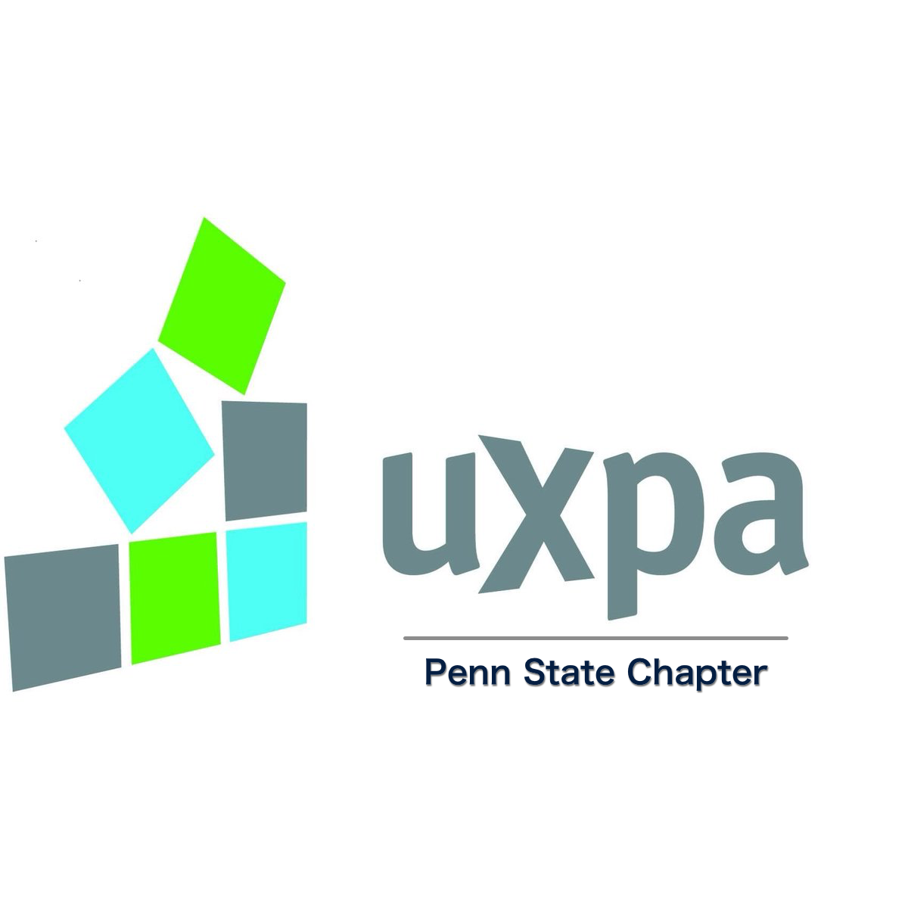
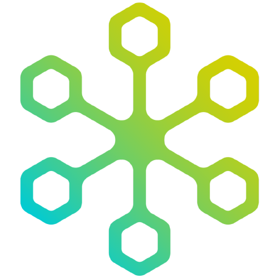
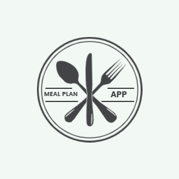

I’m Hannah, a Junior at Penn State University, excited to explore where tech can lead me. I am studying Human Centered Design and Development (HCDD), and want to pursue a career in UX Design or Front End Web Development. When I was deciding what I wanted to do with my life two passions stood out to me, people and technology. These interests led me to where I am today. That is, aspiring to make technology easily accessible and seeking to design useful products to assist in daily activities. I want to make a positive difference in the world.
UXPA strives to give UX students opportunities to gain experience outside of the classroom. As the founding treasurer of UXPA, Penn State Chapter, I have put in a lot of time and effort to get the club started. Leading meetings, recruiting members, designing wireframes, and working to become a recognized club are some of the ways I have assisted. I have been the Project Manager for the JamPacks project to redesign their website. I worked as a liason between my team and the client, as well as assist in website functionality. Click here to see their website.
I have worked with HAX-The-Web, an open source content management system, completing an Independent Study and many projects. I worked alongside professors, professionals, and peers to contribute to the GitHub repository. I test and solve issues in the queue in order to keep the system working properly and improving. One such issue was the vocab-term, created with JavaScript. The vocab-term web component was made in order to add an element that will allow a tooltip definition. You can change the text, definition, and add pictures. Click here to see the github repository.
One of my favorite tools to use has been Android Studio. With Java, I have designed and developed an app start to finish on Android Studio. I worked on a small team as the lead developer in order to code the functionality of the meal plan app. My favorite method for this was the grocery list. I allowed users to add an item to shared preferences and dynamically changed the size of the list. This was a very difficult challenge and I learned a lot about Java, Android Studio, and working on a difficult team. Click here to see the github repository.

All of these projects are great but how do they play into the future of my career? My goal over the next few years is to gain more exposure in front end development fields. These projects show me what I like, what I’m good at, and where I want to be in the future.
So far I have a lot of experience with UX Research and Design along with Front End Development. User Research is a very exciting field where you get to talk to many types of people. This is nice, but isn’t something I want to currently pursue. User Design is a field that I loved my time with. It requires a lot of attention to detail and heads down work in front of a Figma screen. My current favorite field is Front End Development. My time with HAX-The-Wed gave me lots of exposure to JavaScript which I have loved. Web components have shown me the depth of what open source can do. I recently took a class on app development, which I talk about in my projects page. The few months of exposure to android studio were very interesting to me. I loved getting to code an app, run an emulator, and see it work.
I have so much to learn and I hope that my internship, Senior year, and entry level positions can help with exposure in determining the field where I will fit best. I would love more time spent with Kotlin, Java, and open source projects. Docker and Kubernates are two other technologies I plan to spend some time exploring and using. There are so many opportunities out there and I’m slowly learning more about all of them. I recently had exposure to Vercel which is revolutionary and changing the way deployment can work. These are the things that I am excited to watch grow.
This summer I have accepted an intern position with Lowe’s headquarters in Mooresville, North Carolina. I will be working on the Enterprise Item Team which is part of Tech Merchandise Management in the eCommerce group. I am excited for this exposure in a workplace as well as the technology I will get to use.
Lowe’s is an exciting company for me but there are so many out there I would love to explore. There are definitely pros and cons to every type of company large or small. I have a heart for nonprofit work and startups which I would love to have the opportunity to explore. This may have to wait until I am at a more financially stable stage of life. For now I am very excited for the opportunities available at a bigger company. Eventually I would also like to explore a strictly tech company. Hopefully there will be opportunities for growth with peers in any of these options.
Who knows where I will be in ten years or even by the time I would like to retire or even when that might be. That's the point of these next few years of trying different jobs and teams. Over time I will learn what I love and can settle into a role made for me. I’m excited to see where the tech world can lead me.